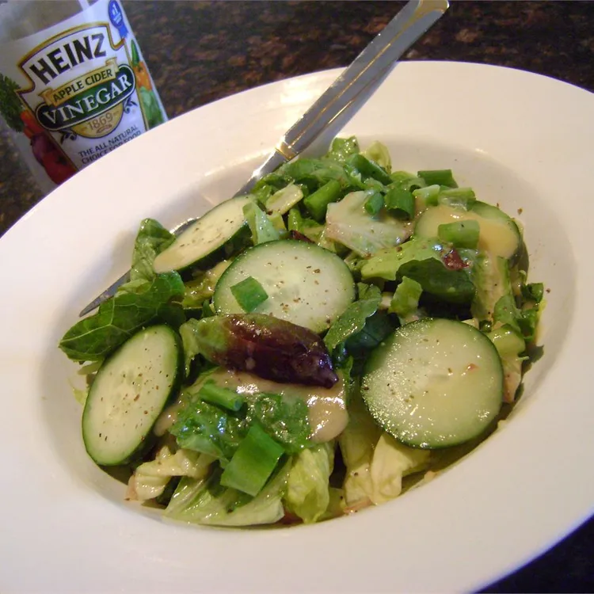

Sugar Salad

Description:
Sweet and sour salad.
Ingredients:
- ¼ cup vegetable oil
- 2 tablespoons apple cider vinegar
- 2 tablespoons white sugar
- 1 head green leaf lettuce, torn into bite-size pieces
Steps:
- Whisk the vegetable oil, vinegar, and sugar in a small bowl
- Place the lettuce in a large bowl.
- Drizzle the oil mixture over the lettuce and toss to coat.
- Enjoy.
Back to Home